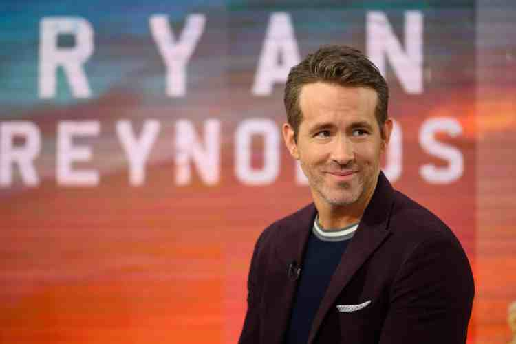
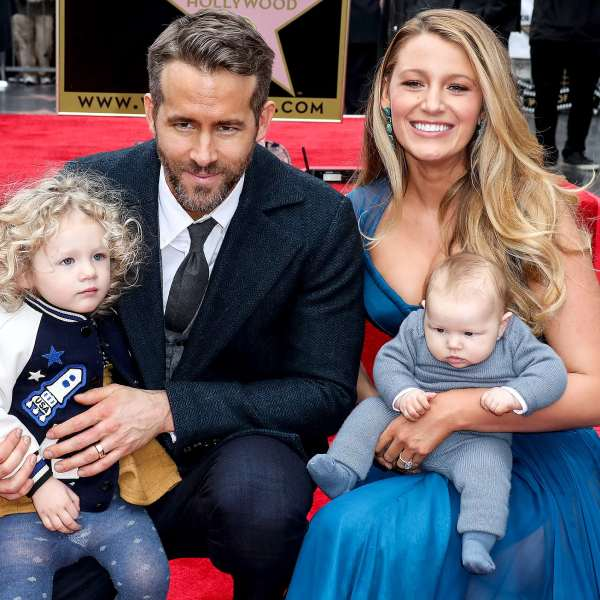

Personal Life
Ryan Reynolds was born in Vancouver, Canada, on October 23, 1976. He is the son of James Reynolds, who was a food wholesaler, and Tamara Stewart, who was a retail saleswoman. He is the youngest of four children. He struggled to start his acting career throughout the 1990’s. He moved to Los Angeles and lived with a friend towards the end of the 90’s, where his acting career began to pick up.
From June 2004 to early 2007 he was engaged to singer-songwriter Alanis Morissette. In 2008 he married Scarlett Johansson, and they were married until the end of 2010, when they separated. In 2012 he married Blake Lively, who starred in Green Lantern with him. They have three daughters named James, Ines and Betty.